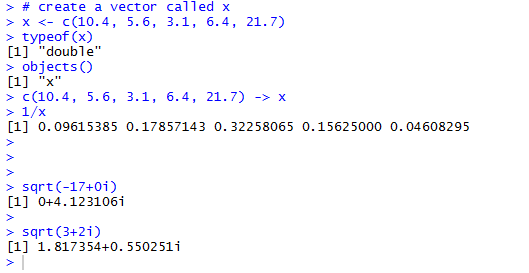
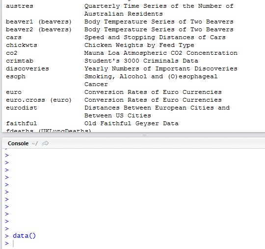
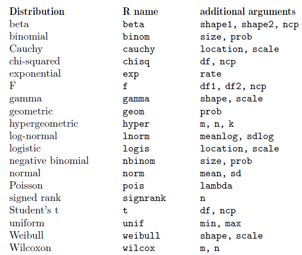

R |
abcdefghijklmnopqrstuvwxyz; ABCDEFGHIJKLMNOPQRSTUVWXYZ
Fun!
R's main page ("homepage") is https://www.r-project.org/
Wikipedia: 'S is a statistical programming language developed primarily by John Chambers and (in earlier versions) Rick Becker and Allan Wilks of Bell Laboratories. The aim of the language, as expressed by John Chambers, is "to turn ideas into software, quickly and faithfully".'
Scheme is an elegant language, derived from Lisp (an AI language) - Scheme's has clear and simple semantics, and offers many ways to form expressions.
R owes its origins to both S and Scheme - its interpreter is Scheme-based, and its purpose is similar to that of S, to serve as a language for statistics.
You can read more about R's origins here.
You can choose between several IDEs (Integrated Development Environments) and GUI front ends:
If you want just one to start with, pick RStudio. Note that you need to first install R (from https://cran.r-project.org/src/base/R-3/) before installing RStudio [or any other IDE or GUI front-end].
So what does R actually look like, what datatypes does it have, what operators? How are functions declared and called?
R particularly shines when it comes to operations on vectors, arrays, matrices and tables - all of which are built-in ('native') datatypes.
R code can be executed interactively in a shell, or be run from a .R source file (script).
# create a vector called x
x <- c(10.4, 5.6, 3.1, 6.4, 21.7)
typeof(x)
objects()
# alternative
assign("x", c(10.4, 5.6, 3.1, 6.4, 21.7))
c(10.4, 5.6, 3.1, 6.4, 21.7) -> x # !!!
1/x
y <- c(x, 0, x) # y will have 11 entries
v <- 2*x + y + 1
# generates a new vector v of length 11 constructed by adding together,
# element by element, 2*x repeated 2.2 times, y repeated just once,
# and 1 repeated 11 times
Here are sample operations (in RStudio):

Several functions operate on a vector, eg. range(), min(), max(), sum(), prod(), mean(), sort()..
Sequences are easy to create:
# c(1,2,3,4.....30) > m <- 1:30 > m [1] 1 2 3 4 5 6 7 8 9 10 11 12 13 14 15 16 17 18 19 [20] 20 21 22 23 24 25 26 27 28 29 30 > n <- seq(2,5) > n [1] 2 3 4 5 >
Logical vectors (comprised of T,F) are created via conditions, eg.
> temp <- x>13 > temp [1] FALSE FALSE FALSE FALSE TRUE >
Matrices/arrays are muti-dim versions of vectors.
Lists can have elements of unequal types.
Data frames are matrix-like structures, in which the columns can be of different types - this is how we can create/read in relations!
Functions are objects as well. "The function tapply() is used to apply a function, here 'mean()', to each group of components of the first argument, here 'incomes', defined by the levels of the second component, here 'statef'":
> incmeans <- tapply(incomes, statef, mean)
Easy to write vector-oriented functions:
> stderr <- function(x) sqrt(var(x)/length(x))
Arrays can be created from vectors, via dim():
# if z has 1500 elements, here is how it can be turned
# into a 3D array:
> z = 1:1500
> dim(z) <- c(3,5,100)
> z
, , 1
[,1] [,2] [,3] [,4] [,5]
[1,] 1 4 7 10 13
[2,] 2 5 8 11 14
[3,] 3 6 9 12 15
, , 2
[,1] [,2] [,3] [,4] [,5]
[1,] 16 19 22 25 28
[2,] 17 20 23 26 29
[3,] 18 21 24 27 30
, , 3
[,1] [,2] [,3] [,4] [,5]
[1,] 31 34 37 40 43
[2,] 32 35 38 41 44
[3,] 33 36 39 42 45
....
....
data() lists sample datasets:

edit() is used to edit data, spreadsheet-fashion:
xnew <- edit(xold) xnew <- edit(data.frame())
R has a lot of probability distribution functions built-in:

A stem-and-leaf plot of data is easy to generate:
> attach(faithful) # READ in a dataset > summary(eruptions) Min. 1st Qu. Median Mean 3rd Qu. Max. 1.600 2.163 4.000 3.488 4.454 5.100 > fivenum(eruptions) [1] 1.6000 2.1585 4.0000 4.4585 5.1000 > stem(eruptions) The decimal point is 1 digit(s) to the left of the | 16 | 070355555588 18 | 000022233333335577777777888822335777888 20 | 00002223378800035778 22 | 0002335578023578 24 | 00228 26 | 23 28 | 080 30 | 7 32 | 2337 34 | 250077 36 | 0000823577 38 | 2333335582225577 40 | 0000003357788888002233555577778 42 | 03335555778800233333555577778 44 | 02222335557780000000023333357778888 46 | 0000233357700000023578 48 | 00000022335800333 50 | 0370
There is more to learn! If you are interested, go through the books/sites listed at the end of this lecture. Meanwhile, here is a .R script filled with practice commands.
Here is a nice reference card that summarizes all the aspects of R.
Just like Python has modules and Java has class libraries, R has packages, which are collections of useful functions - these effectively help extend R (by introducing new input and output types, and new functions).
Here are some popular R packages:
Want to discover and utilize even more packages? Look here :)
http://r-pkgs.had.co.nz/ is the page for a book on (writing) R packages - the site is quite informative (as is the book).
PypeR is a Python interface to R.
rPy2 is another module that also provides access to R from inside Python.
Jupyter is a programming workbench that supports mixing and matching multiple languages, including Python and R.
Python or R? Hard to choose :)
Using the RWeka package, it is possible to hook into the Weka runtime, via R commands..
There is a *wealth* of material out of there for you to explore further!
Books
There are numerous books on R. Here are ten that I recommend:
Notes [sites devoted to R]
Courses
Misc